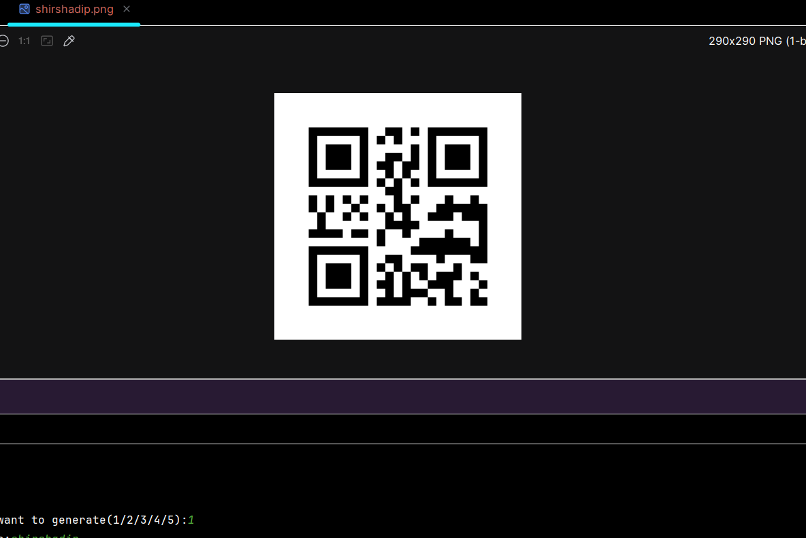
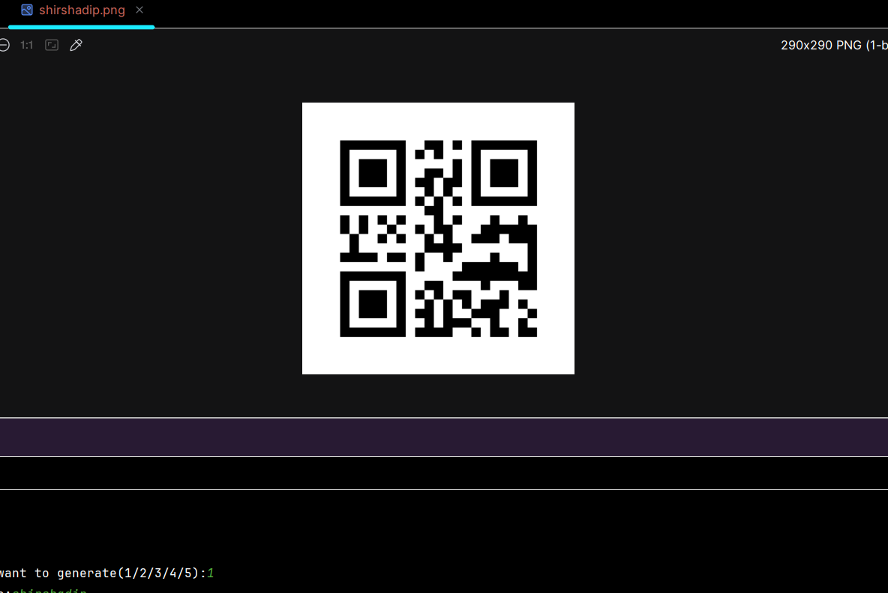
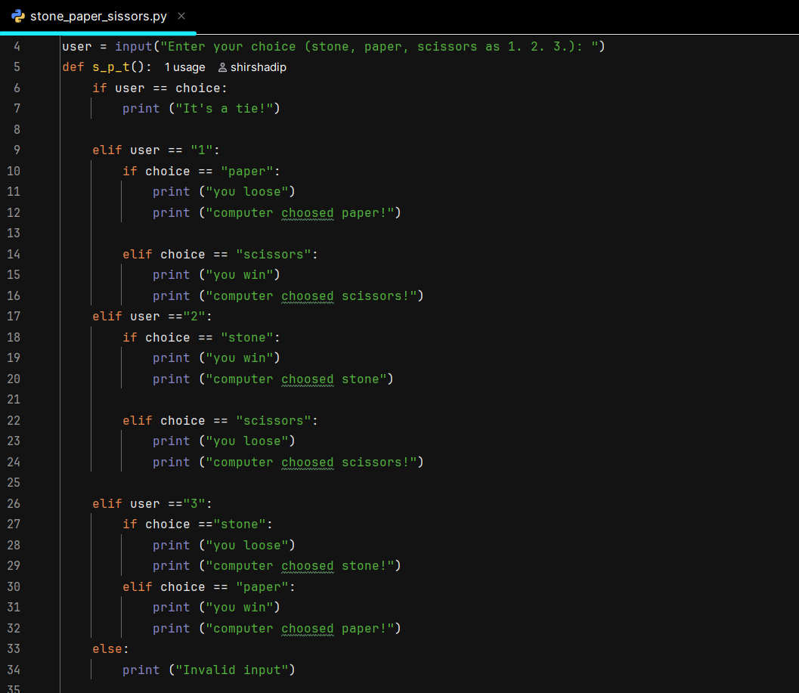

বাংলার দুর্গোৎসব (bengalis durgotsav)
tap on a image
about the project
1.this project is a normal static html css page where I mentioned about durga puja
2.some pages are under construction
3.this is my first project at web developement
4.I will try to create a full banglar utsav page and make this page under the project
about the project
5.there is a function where you can pause play dhak music
6.every page has a attached navigation button to travel through pages
7.mythology page is the main page where the full page is completed
8.my github and linkedin link is attached in the bottom of the page
9.in the click here,I am adding a countdown for durga puja
10.the images page will contain durga maa and pandal related photos and videos
11. I am still working on 2 to 3 more pages
12. I will try to improve the page,and trying to make this a full fledged dynamic website
2. qr code generator
tap on a image 

about the project
1.its a python program where you can generate any type of qr codes like, for upi,whatsapp,any link,mobile number etc.
2.it has a simple CUI based interface
3.i will plan to make it a full GUI based application in future
4.code is available in my github repository
5.i will try to add more features in future,and fix some bugs
6.you can scan the qr code image,there will show the name shirshadip
1. a simple stone paper scissors game
tap on the image
 stone paper scissors game (GitHub Repository)
about the project
1.this is my first project in python.
2.it is a very simple basic CUI based stone paper scissor game,you can play this game in you computer terminal.
3.this game is so basic, I will try to make this game more better, by adeding levels,quit options,multiple chance and I want to
make it a GUI based game.